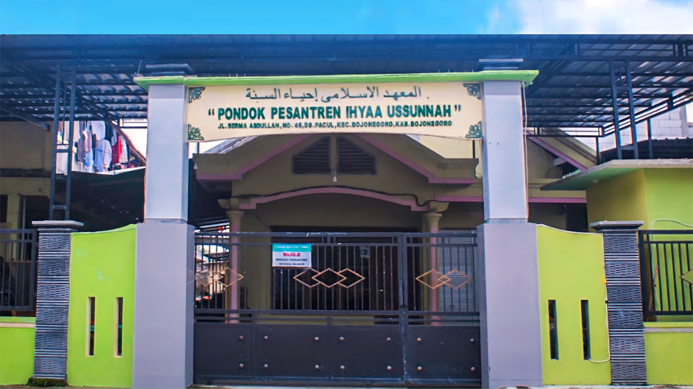
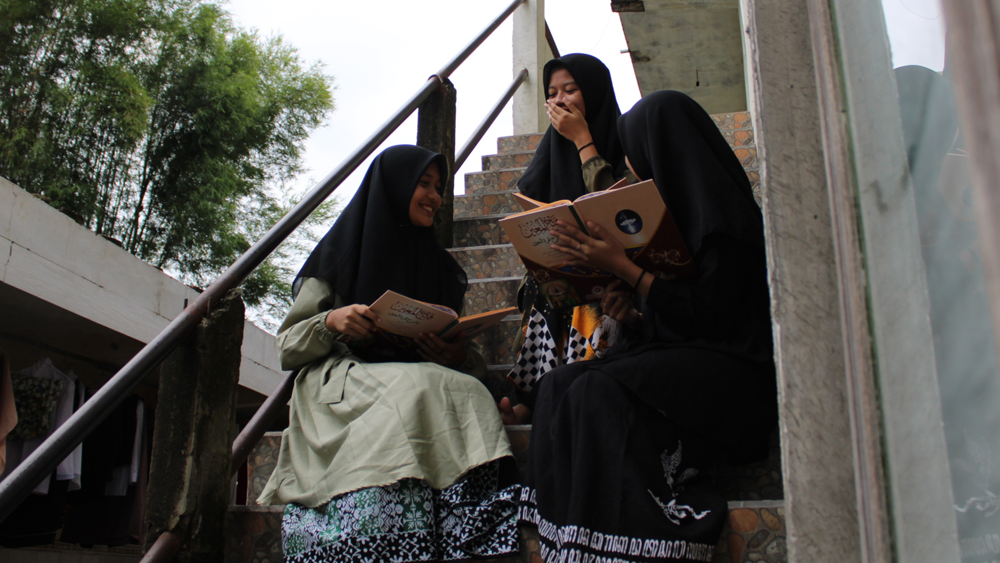
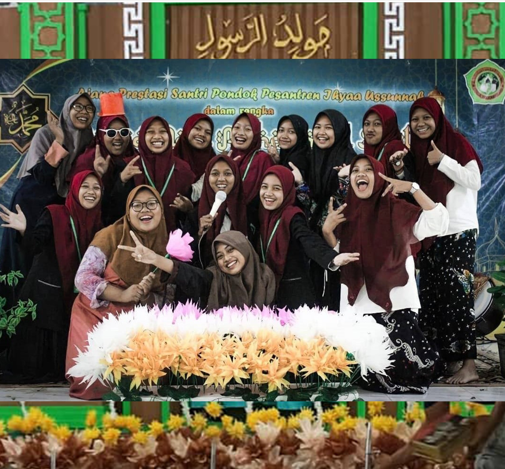

Latar Belakang Pondok Pesantren

Pondok Pesantren Ihyaa ussunnah di asuh oleh KH. Abu Chasan
Beliau memulai merintis Pondok Pesantren ini di tahun 2007. Pembagunan gedung pondok yang semakin
luas ini di tempati kurang lebih 350 santri putra maupun putri. Dengan metode seperti pondok salaf
yang diajarkan Romo Yai.
Pondok Pesantren Ihyaa ussunnah ini menjadi kepercayaan masyarakat lokal maupun non lokal untuk
menitipkan putra putrinya.
Pondok Pesantren Ihyaa ussunnah yang bertempat di Desa Pacul Kecamatan Bojonegoro Kabupaten
Bojonegoro ini didirikan dengan maksud pelajar dan mahasiswa bisa mengenal atau menjadi santri di
pondok pesantren. Dengan demikian,pelajar dan mahasiswa dapat memperoleh wawasan keagamaan yang luas
sehingga di samping unggul dalam bidang IPTEK juga unggul dalam bidang IMTAQ.
Visi Misi

1.Mensuritauladani akhlaqul karimah Nabi Muhammad SAW.
2.Meneruskan perjuangan salafus sholih dalam berilmu dan beragama dan serta mampu menghadapi
tantangan zaman.
3.Mengembangkan sistem salafiyah dan berpedoman pada thoriqoh ta'lim wata'lum.
Selayang Pandang

Pondok Pesantren IHYAAUSSUNNAH merupakan sebuah lembaga pendidikan Islam yang berfokus pada
pengajaran Al-Qur'an, hadits, dan ilmu-ilmu agama dengan tujuan utama melahirkan generasi yang
berakhlak mulia, berpegang teguh pada ajaran Islam, serta mampu mengamalkan ilmu yang telah didapat
dalam kehidupan sehari-hari.
Dengan mengedepankan metode pendidikan yang holistik, pesantren ini menggabungkan pengajaran ilmu
agama dengan pembentukan karakter yang kuat, disiplin, dan tanggung jawab. Pesantren ini juga
memberikan perhatian khusus pada pengembangan kemampuan santri dalam memahami dan menghafal
Al-Qur'an, serta mengkaji kitab-kitab klasik yang menjadi rujukan dalam ilmu agama Islam.
Pondok Pesantren IHYAAUSSUNNAH menawarkan suasana belajar yang tenang dan kondusif, serta didukung
oleh para pengajar yang kompeten dan berpengalaman dalam bidangnya. Dengan kurikulum yang dirancang
secara terstruktur, santri tidak hanya diberikan pendidikan agama, tetapi juga bimbingan spiritual
yang kuat untuk menjadi insan yang siap menghadapi tantangan zaman tanpa melupakan nilai-nilai
keislaman.
Pesantren ini juga membuka peluang bagi santri untuk belajar keterampilan hidup yang praktis,
sehingga mereka siap berkontribusi secara positif dalam masyarakat setelah menyelesaikan masa
pendidikan di pesantren.